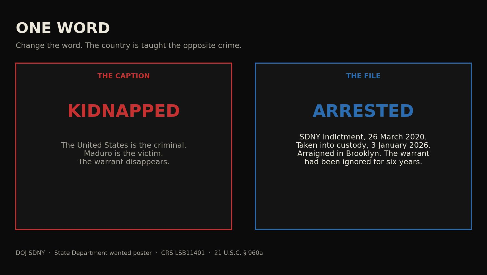

Journal · The Tape · Sep 21, 2026 · 30-second read
One word


people charged under the federal insurrection statute (18 U.S.C. § 2383) for January 6; about 1,583 were federally charged with other crimes
U.S. Attorney recordOpen the record ↗ ✓ Verified by SwampForce
The record Tap a card for the detail. Each one opens the source.
Durham: the FBI opened a full investigation without actual evidence of collusion.DOJ report
The same trick ran for twelve years against the man the country hired, and against the people who hired him. Collusion. The Durham report says the FBI opened a full investigation on raw, uncorroborated intelligence and did not have actual evidence of collusion in its holdings when the case began.
DOJ reportOpen the record ↗Inspector General: 17 inaccuracies and omissions in the Carter Page FISA applications.DOJ Inspector General report
Inspector General Horowitz found seventeen inaccuracies and omissions in the Carter Page FISA applications used to surveil a U.S. person tied to a presidential campaign.
DOJ Inspector General reportOpen the record ↗Oath Keepers and Proud Boys leaders were convicted of seditious conspiracy.U.S. Code
Oath Keepers and Proud Boys leaders convicted of seditious conspiracy, 18 U.S.C. § 2384.
U.S. CodeOpen the record ↗Read the full essay
The verified text, checked against primary records on Sep 24, 2026. Passages marked Our view are opinion.
Our view Twelve years of the same trick: change one word, teach the country the opposite crime, and put a president through hell for a caption that was never on the file.
Image: /images/chart-one-word-ledger.jpg — Twelve years of one-word swaps
Our view Gaslighting is not a feeling. It is a method. A speaker replaces what happened with a word that cannot survive the file, then repeats the word until the file feels rude to mention. The listener is not argued with. The listener is trained to distrust the thing in front of their eyes. One word is enough. The rest of the sentence can stay true. The swapped word does all the work. For twelve years that method was used on a country and on a president. Maduro is the latest noun. It is not the first.
Image: /images/chart-one-word.jpg — Kidnapped versus arrested
Kidnapped is the word that ran. Arrested is the file. The Department of Justice charged Nicolás Maduro Moros on 26 March 2020 in the Southern District of New York with narco-terrorism conspiracy under 21 U.S.C. § 960a. The indictment alleged an intent to flood the United States with cocaine. A warrant issued. For six years the defendant did not appear. The State Department: on 3 January 2026 he “was placed in U.S. custody following a military operation in Caracas,” taken to the Metropolitan Detention Center in Brooklyn, and charged in a superseding indictment unsealed that day. Kidnapping under 18 U.S.C. § 1201 is the unlawful seizure of a person. Our view: a named defendant brought before a court on a six-year-old warrant is not a kidnapping victim. The swapped word made the United States the criminal and Maduro the victim. That is the entire trick.
The same trick ran for twelve years against the man the country hired, and against the people who hired him. Collusion. The Durham report says the FBI opened a full investigation on raw, uncorroborated intelligence and did not have actual evidence of collusion in its holdings when the case began. Years of a Russia caption followed. The file did not. Inspector General Horowitz found seventeen inaccuracies and omissions in the Carter Page FISA applications used to surveil a U.S. person tied to a presidential campaign. The caption was Russia. The applications were not scrupulously accurate.
Muslim ban. The instrument was Proclamation 9645. The Supreme Court upheld it in Trump v. Hawaii. Countries. Not a faith test. Kids in cages. The chain-link processing center in McAllen opened in 2014. The Flores settlement is 1997. The pictures were not a 2018 invention. Mostly peaceful. A precinct burned. Insurrection. USAO-DC: about 1,583 federally charged. Assault, trespass, civil disorder. Oath Keepers and Proud Boys leaders convicted of seditious conspiracy, 18 U.S.C. § 2384. Zero under the insurrection statute, § 2383. Domestic terrorists. Parents at school boards. The National School Boards Association asked the White House. Five days later the Attorney General ordered U.S. Attorneys and the FBI to coordinate. Russian disinfo. Fifty-one former intelligence officials signed an October 19, 2020 letter saying the laptop story had the classic earmarks of a Russian information operation, weeks before the vote. They clipped the tape on bloodbath, dictator, and fine people. Each time the swapped word taught a crime the recording did not contain.
Our view Once the word sticks, process is the punishment. The House impeached twice. Then four criminal dockets ran at once against the same man. The public paid for the committee. Defense is not free. A presidency can be buried in process without a statute that matches the caption. Neighbors were taught that the people who hired him were a threat to the country. That is how a republic is divided without a shot: one word, repeated, until the person across the street is the enemy and the employee who ran the caption still has the gavel.
Our view Twelve years. One method. Read the warrant. The caption is the gaslight.
Chart rows
Kidnapped
They ran: The United States kidnapped the president of Venezuela.
The file: SDNY indictment, 26 March 2020. Custody after a military operation, 3 January 2026. Held in Brooklyn on a superseding indictment.
Record: state.gov ↗
Collusion
They ran: The campaign colluded with Russia.
The file: Durham: the FBI opened a full investigation on raw, uncorroborated intelligence. It did not have actual evidence of collusion in its holdings when the case began.
Record: justice.gov ↗
Insurrection
They ran: January 6 was insurrection.
Record: justice.gov ↗
Mostly peaceful
They ran: Mostly peaceful protests.
The file: A precinct burned. The word peaceful did the work the tape would not.
Muslim ban
They ran: He banned Muslims.
The file: Proclamation 9645. The Supreme Court upheld it in Trump v. Hawaii. Countries, not a faith test.
Record: supremecourt.gov ↗
Kids in cages
They ran: He put children in cages.
The file: The chain-link processing center in McAllen opened in 2014. The Flores settlement is 1997. The pictures were not a 2018 invention.
Domestic terrorists
They ran: Parents at school boards are a domestic-terror problem.
The file: NSBA asked the White House. Five days later the Attorney General ordered U.S. Attorneys and the FBI to coordinate.
Record: justice.gov ↗
Russian disinfo
They ran: The laptop is a Russian trick.
The file: Fifty-one former intelligence officials signed an October 19, 2020 letter weeks before the vote.
Dictator
They ran: He said he will be a dictator on day one.
The file: Close the border. Drill. “After that, I’m not a dictator.”
Fine people
They ran: He called neo-Nazis very fine people.
The file: Same remarks: neo-Nazis and white nationalists “should be condemned totally.”
Receipts
- DOJ SDNY — Maduro charged, 26 March 2020 — justice.gov ↗
- State Department — Maduro captured, 3 January 2026 — state.gov ↗
- Durham report — justice.gov ↗
- Horowitz IG — FISA — oig.justice.gov ↗
- USAO-DC — January 6 charge tally — justice.gov ↗
- Trump v. Hawaii — supremecourt.gov ↗
- Garland — school boards memo — justice.gov ↗
- They clipped the tape — /dispatch/they-clipped-the-tape